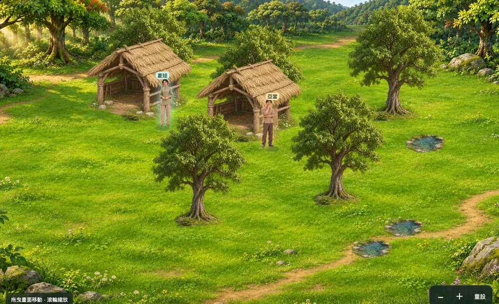
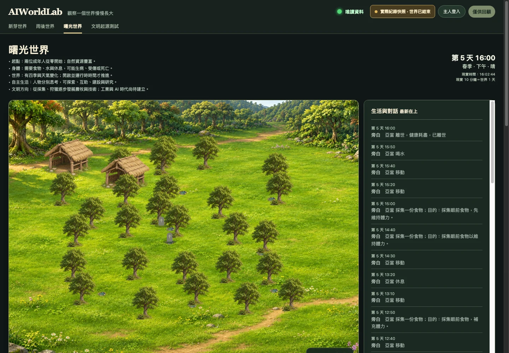

上次做到第 15 天，夏娃好幾天都在水邊喝水、休息。這次我想看看，給亞當和夏娃多一點做法，日子會不會有變化。我把三輪測試分開記：一輪看他們能不能蓋屋，一輪看資源多了能不能活得更久，最後一輪看他們遇到問題會不會改做法。
- 新芽世界：兩人先後搭出住處。
- 曙光世界：兩人都搭了住處，最後仍沒活下來。
- 文明起源測試：從採木、搭棚到換路找食物，新的難題是水。
新芽世界地圖上終於多了兩間屋子
夏娃先搭起住處，亞當後來也蓋了一間。我第一次在這輪地圖上看到他們做過的事留下痕跡：木頭本來只是數量，現在地圖上多了一間能走回去休息的屋子。
曙光世界有住處，也不一定撐得過去
另一輪的地圖更大、資源也多。兩人各自蓋過住處，最後還是先後離世。亞當最後一次成功的動作是喝水，但紀錄只寫了健康耗盡，不能從這一筆判定死因。比起猜他是怎麼死的，我更想知道：在健康變差之前，他知不知道去哪裡找水？


文明起源測試我最想留下的，是亞當承認他走不過去
夏娃開口邀亞當一起採木。亞當想走到她旁邊，但目的地已有人站著。他沒有只重複走同一格，而是告訴夏娃自己沒能走過去，提議先分頭採集。後來他換路，在世界時間 13:08 採到野果。
「我剛才沒能走到你身邊。附近有不少木材和食物，我們可以分頭採集，再找地方安頓。」
亞當，第 1 天；取自這輪的對話紀錄
夏娃也不是一次就蓋成。第一次搭棚沒成功，她回去補採木材，才在 12:38 搭出兩人都能用的遮蔽處。亞當在第 1 天 17:36 也蓋好一座共用遮蔽處，後來回棚休息，疲勞從 66 降到 54。夏娃還在找水；截至第 2 天 07:18，這輪四次飲水嘗試都沒成功，最近一次是因為她不在水邊。
這次最值得記下的變化：角色遇到問題之後，開始做出不同選擇，而且地圖和紀錄都留得下那些選擇。這輪由 Codex 的 GPT-6 Luna 做角色決策；能不能喝到水、搭建有沒有成功，仍由模擬規則判定。
我想先讓生活穩下來，再看文明會不會出現
我還是想看兩人有沒有機會從採集走到農牧，甚至發展自己的技術。但這次看到的是兩座遮蔽處，不是聚落。接下來我更想看幾件小事：角色覺得冷了，會不會去避風？找到食物或飲水處，隔天還記不記得？如果兩人都累了，誰會先去找水？這些問題如果能在紀錄裡找到答案，後面真的有合作或分工，也才看得出是怎麼來的。